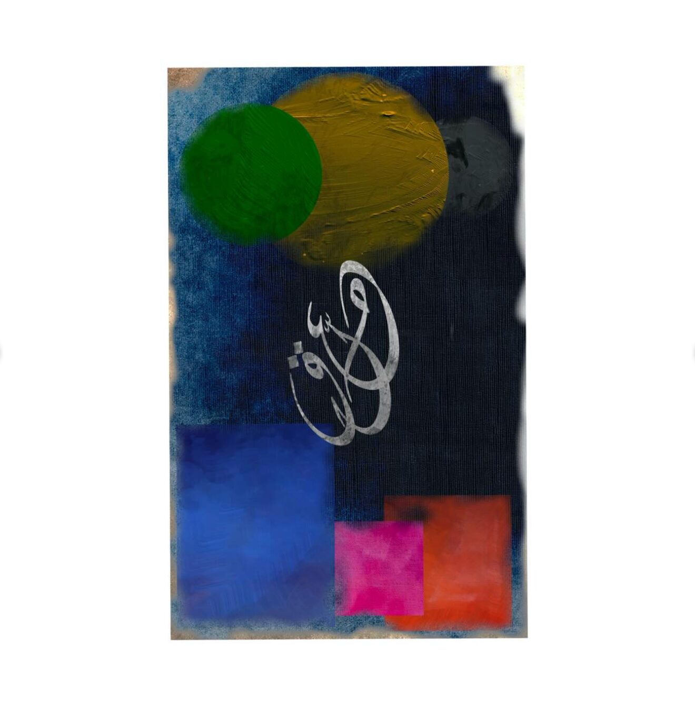
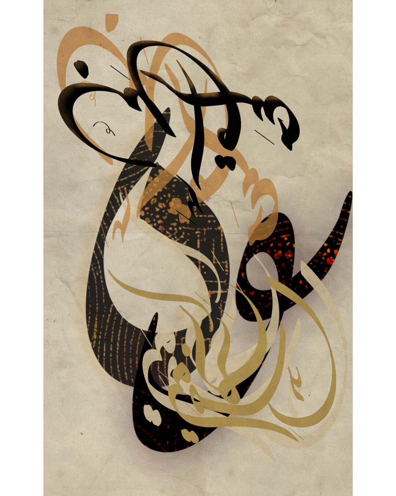

ENJZ — Arabic poetry as visual art
إلى اليوم ما زلت رغم البعد مفتون
To this day, I remain — despite the distance — enchanted.
معلّقٌ بين الأرض والسماء
Suspended between the earth and the sky, I search for longing and write of love.
سَأَقْلِبُ السُّكُونَ في كَلامِكِ ضَمَّة
I will turn the silence in your words into an embrace.
The letters are mine. Each work begins as a poem I wrote by hand, and ends as pigment on Hahnemühle paper, in editions small enough to stay rare.


Arabic here is material, not ornament — letters with weight, silence and history, made into something you can live beside.
لبنانLebanon
Lebanon does not live in geography alone. It lives in how we love, in how we remember, in what remains when nothing remains.
This collection is not about the war, though the war is present in it. It is about a country that resembles the people we cannot move on from — complicated, wounding, indispensable.
I wrote these poems because I found no other way to carry what I carry. I turned them into visual works because words alone were no longer enough.
ترفIndulgence
Indulgence dwells on emotional intensity rather than restraint. The pieces gathered here treat love, pain, longing and devotion not as passing states but as conditions willingly entered. Language becomes a place where feeling is allowed to overflow.
The texts resist simplification. They speak of endurance, tenderness and inner conflict, balancing vulnerability with resolve. The compositions carry that same tension through contrast, rhythm and selective emphasis.
Each work is made as a contemplative object — one that invites prolonged looking rather than quick consumption.


خارج السربHors Série
Pieces from words I wrote that refuse to sit inside a frame.
أعمال جديدةNew Works
The most recent pieces, still finding the company they belong to.
Nothing here is sold from a shelf
Every piece is made after the conversation. Tell me the work, the format and the wall it is going to, and I will tell you what is still available in the edition and what it costs to make.
Start a conversation